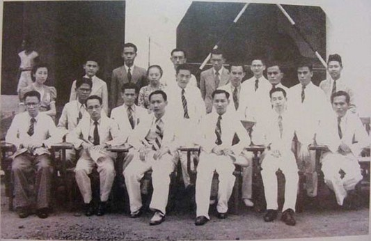

SEJARAH BALI
- Masa Penjajahan Belanda
- Lahirnya Organisasi Pergerakan
- Masa Pendudukan Jepang (1945)
- Masa Kemerdekaan
- Puputan Margarana (1946)
- Konferensi Denpasar
- Masa 1949 - 2005
Sejak kerajaan Buleleng jatuh ke tangan Belanda mulailah pemerintah Belanda ikut campur mengurus soal pemerintahan di Bali. Hal ini dilaksanakan dengan mengubah nama raja sebagai penguasa daerah dengan nama regent untuk daerah Buleleng dan Jembrana serta menempatkan P.L. Van Bloemen Waanders sebagai controleur yang pertama di Bali. Struktur pemerintahan di Bali masih berakar pada struktur pemerintahan tradisional, yaitu tetap mengaktifkan kepemimpinan tradisional dalam melaksanakan pemerintahan di daerah-daerah. Untuk di daerah Bali, kedudukan raja merupakan pemegang kekuasaan tertinggi, yang pada waktu pemerintahan kolonial didampingi oleh seorang controleur. Di dalam bidang pertanggungjawaban, raja langsung bertanggung jawab kepada Residen Bali dan Lombok yang berkedudukan di Singaraja, sedangkan untuk Bali Selatan, raja-rajanya betanggung jawab kepada Asisten Residen yang berkedudukan di Denpasar. Untuk memenuhi kebutuhan tenaga administrasi, pemerintah Belanda telah membuka sebuah sekolah rendah yang pertama di Bali, yakni di Singaraja (1875) yang dikenal dengan nama Tweede Klasse School. Pada 1913, dibuka sebuah sekolah dengan nama Erste Inlandsche School dan kemudian disusul dengan sebuah sekolah Belanda dengan nama Hollands Inlandshe School (HIS) yang muridnya kebanyakan berasal dari anak-anak bangsawan dan golongan kaya.
 Akibat pengaruh pendidikan yang didapat, para pemuda pelajar dan beberapa orang yang telah mendapatkan pekerjaan di kota Singaraja berinisiatif untuk mendirikan sebuah perkumpulan dengan nama "Suita Gama Tirta" yang bertujuan untuk memajukan masyarakat Bali dalam dunia ilmu pengetahuan melalui ajaran agama. Sayang perkumpulan ini tidak burumur panjang. Kemudian beberapa guru yang masih haus dengan pendidikan agama mendirikan sebuah perkumpulan yang diberi nama "Shanti" pada tahun 1923. Perkumpulan ini memiliki sebuah majalah yang bernama "Shanti Adnyana" yang kemudian berubah menjadi "Bali Adnyana". Pada tahun 1925 di Singaraja juga didirikan sebuah perkumpulan yang diberi nama "Suryakanta" dan memiliki sebuah majalah yang diberi nama "Suryakanta". Seperti perkumpulan Shanti, Suryakanta menginginkan agar masyarakat Bali mengalami kemajuan dalam bidang pengetahuan dan menghapuskan adat istiadat yang sudah tidak sesuai dengan perkembangan zaman. Sementara itu, di Karangasem lahir suatu perhimpunan yang bernama "Satya Samudaya Baudanda Bali Lombok" yang anggotanya terdiri atas pegawai negeri dan masyarakat umum dengan tujuan menyimpan dan mengumpulkan uang untuk kepentingan studiefonds.
Setelah melalui beberapa pertempuran, tentara Jepang mendarat di Pantai Sanur pada tanggal 18 dan 19 Februari 1942. Dari arah Sanur ini tentara Jepang memasuki kota Denpasar dengan tidak mengalami perlawanan apa-apa. Kemudian, dari Denpasar inilah Jepang menguasai seluruh Bali. Mula-mula yang meletakkan dasar kekuasaan Jepang di Bali adalah pasukan Angkatan Darat Jepang (Rikugun). Kemudian, ketika suasana sudah stabil penguasaan pemerintahan diserahkan kepada pemerintahan sipil. Karena selama pendudukan Jepang suasana berada dalam keadaan perang, seluruh kegiatan diarahkan pada kebutuhan perang. Para pemuda dididik untuk menjadi tentara Pembela Tanah Air (PETA). Untuk daerah Bali, PETA dibentuk pada bulan Januari tahun 1944 yang program dan syarat-syarat pendidikannya disesuaikan dengan PETA di Jawa.
 Menyusul Proklamasi Kemerdekaan Indonesia, pada tanggal 23 Agustus 1945, Mr. I Gusti Ketut Puja tiba di Bali dengan membawa mandat pengangkatannya sebagai Gubernur Sunda Kecil. Sejak kedatangan dia inilah Proklamasi Kemerdekaan Indonesia di Bali mulai disebarluaskan sampai ke desa-desa. Pada saat itulah mulai diadakan persiapan-persiapan untuk mewujudkan susunan pemerintahan di Bali sebagai daerah Sunda Kecil dengan ibu kotanya Singaraja.
Sejak pendaratan NICA di Bali, Bali selalu menjadi arena pertempuran. Dalam pertempuran itu pasukan RI menggunakan sistem gerilya. Oleh karena itu, MBO sebagai induk pasukan selalu berpindah-pindah. Untuk memperkuat pertahanan di Bali, didatangkan bantuan ALRI dari Jawa yang kemudian menggabungkan diri ke dalam pasukan yang ada di Bali. Karena seringnya terjadi pertempuran, pihak Belanda pernah mengirim surat kepada Rai untuk mengadakan perundingan. Akan tetapi, pihak pejuang Bali tidak bersedia, bahkan terus memperkuat pertahanan dengan mengikutsertakan seluruh rakyat.
Untuk memudahkan kontak dengan Jawa, Rai pernah mengambil siasat untuk memindahkan perhatian Belanda ke bagian timur Pulau Bali. Pada 28 Mei 1946 Rai mengerahkan pasukannya menuju ke timur dan ini terkenal dengan sebutan "Long March". Selama diadakan "Long March" itu pasukan gerilya sering dihadang oleh tentara Belanda sehingga sering terjadi pertempuran. Pertempuran yang membawa kemenangan di pihak pejuang ialah pertempuran Tanah Arun, yaitu pertempuran yang terjadi di sebuah desa kecil di lereng Gunung Agung, Kabupaten Karangasem. Dalam pertempuran Tanah Arun yang terjadi 9 Juli 1946 itu pihak Belanda banyak menjadi korban. Setelah pertempuran itu pasukan Ngurah Rai kembali menuju arah barat yang kemudian sampai di Desa Marga (Tabanan). Untuk lebih menghemat tenaga karena terbatasnya persenjataan, ada beberapa anggota pasukan terpaksa disuruh berjuang bersama-sama dengan masyarakat.
Menyusul Proklamasi Kemerdekaan Indonesia, pada tanggal 23 Agustus 1945, Mr. I Gusti Ketut Puja tiba di Bali dengan membawa mandat pengangkatannya sebagai Gubernur Sunda Kecil. Sejak kedatangan dia inilah Proklamasi Kemerdekaan Indonesia di Bali mulai disebarluaskan sampai ke desa-desa. Pada saat itulah mulai diadakan persiapan-persiapan untuk mewujudkan susunan pemerintahan di Bali sebagai daerah Sunda Kecil dengan ibu kotanya Singaraja.
Sejak pendaratan NICA di Bali, Bali selalu menjadi arena pertempuran. Dalam pertempuran itu pasukan RI menggunakan sistem gerilya. Oleh karena itu, MBO sebagai induk pasukan selalu berpindah-pindah. Untuk memperkuat pertahanan di Bali, didatangkan bantuan ALRI dari Jawa yang kemudian menggabungkan diri ke dalam pasukan yang ada di Bali. Karena seringnya terjadi pertempuran, pihak Belanda pernah mengirim surat kepada Rai untuk mengadakan perundingan. Akan tetapi, pihak pejuang Bali tidak bersedia, bahkan terus memperkuat pertahanan dengan mengikutsertakan seluruh rakyat.
Untuk memudahkan kontak dengan Jawa, Rai pernah mengambil siasat untuk memindahkan perhatian Belanda ke bagian timur Pulau Bali. Pada 28 Mei 1946 Rai mengerahkan pasukannya menuju ke timur dan ini terkenal dengan sebutan "Long March". Selama diadakan "Long March" itu pasukan gerilya sering dihadang oleh tentara Belanda sehingga sering terjadi pertempuran. Pertempuran yang membawa kemenangan di pihak pejuang ialah pertempuran Tanah Arun, yaitu pertempuran yang terjadi di sebuah desa kecil di lereng Gunung Agung, Kabupaten Karangasem. Dalam pertempuran Tanah Arun yang terjadi 9 Juli 1946 itu pihak Belanda banyak menjadi korban. Setelah pertempuran itu pasukan Ngurah Rai kembali menuju arah barat yang kemudian sampai di Desa Marga (Tabanan). Untuk lebih menghemat tenaga karena terbatasnya persenjataan, ada beberapa anggota pasukan terpaksa disuruh berjuang bersama-sama dengan masyarakat.
Menyusul Proklamasi Kemerdekaan Indonesia, pada tanggal 23 Agustus 1945, Mr. I Gusti Ketut Puja tiba di Bali dengan membawa mandat pengangkatannya sebagai Gubernur Sunda Kecil. Sejak kedatangan dia inilah Proklamasi Kemerdekaan Indonesia di Bali mulai disebarluaskan sampai ke desa-desa. Pada saat itulah mulai diadakan persiapan-persiapan untuk mewujudkan susunan pemerintahan di Bali sebagai daerah Sunda Kecil dengan ibu kotanya Singaraja. Sejak pendaratan NICA di Bali, Bali selalu menjadi arena pertempuran. Dalam pertempuran itu pasukan RI menggunakan sistem gerilya. Oleh karena itu, MBO sebagai induk pasukan selalu berpindah-pindah. Untuk memperkuat pertahanan di Bali, didatangkan bantuan ALRI dari Jawa yang kemudian menggabungkan diri ke dalam pasukan yang ada di Bali. Karena seringnya terjadi pertempuran, pihak Belanda pernah mengirim surat kepada Rai untuk mengadakan perundingan. Akan tetapi, pihak pejuang Bali tidak bersedia, bahkan terus memperkuat pertahanan dengan mengikutsertakan seluruh rakyat. Untuk memudahkan kontak dengan Jawa, Rai pernah mengambil siasat untuk memindahkan perhatian Belanda ke bagian timur Pulau Bali. Pada 28 Mei 1946 Rai mengerahkan pasukannya menuju ke timur dan ini terkenal dengan sebutan "Long March". Selama diadakan "Long March" itu pasukan gerilya sering dihadang oleh tentara Belanda sehingga sering terjadi pertempuran. Pertempuran yang membawa kemenangan di pihak pejuang ialah pertempuran Tanah Arun, yaitu pertempuran yang terjadi di sebuah desa kecil di lereng Gunung Agung, Kabupaten Karangasem. Dalam pertempuran Tanah Arun yang terjadi 9 Juli 1946 itu pihak Belanda banyak menjadi korban. Setelah pertempuran itu pasukan Ngurah Rai kembali menuju arah barat yang kemudian sampai di Desa Marga (Tabanan). Untuk lebih menghemat tenaga karena terbatasnya persenjataan, ada beberapa anggota pasukan terpaksa disuruh berjuang bersama-sama dengan masyarakat.
Pada tanggal 7 sampai 24 Desember 1946, Konferensi Denpasar berlangsung di pendopo Bali Hotel. Konferensi itu dibuka oleh Hubertus Johannes van Mook yang bertujuan untuk membentuk Negara Indonesia Timur (NIT) dengan ibu kota Makassar (Ujung Pandang). Dengan terbentuknya Negara Indonesia Timur itu susunan pemerintahan di Bali dihidupkan kembali seperti pada zaman raja-raja dulu, yaitu pemerintahan dipegang oleh raja yang dibantu oleh patih, punggawa, perbekel, dan pemerintahan yang paling bawah adalah kelian. Di samping itu, masih ada lagi suatu dewan yang berkedudukan di atas raja, yaitu dewan raja-raja. PENYERAHAN KEDAULATAN Pada tanggal 7 sampai 24 Desember 1946, Konferensi Denpasar berlangsung di pendopo Bali Hotel. Konferensi itu dibuka oleh Hubertus Johannes van Mook yang bertujuan untuk membentuk Negara Indonesia Timur (NIT) dengan ibu kota Makassar (Ujung Pandang). Dengan terbentuknya Negara Indonesia Timur itu susunan pemerintahan di Bali dihidupkan kembali seperti pada zaman raja-raja dulu, yaitu pemerintahan dipegang oleh raja yang dibantu oleh patih, punggawa, perbekel, dan pemerintahan yang paling bawah adalah kelian. Di samping itu, masih ada lagi suatu dewan yang berkedudukan di atas raja, yaitu dewan raja-raja.

 MASA 1949 – 2005
Pada 12 Oktober 2002, terjadi pengeboman di Kuta yang menyebabkan sekitar 202 orang meninggal dan ratusan lainnya luka-luka. Sebagian besar korban meninggal adalah warga Australia dan Indonesia.
Pada 1 Oktober 2005, terjadi Bom Bali II dimana tiga rangkaian pengeboman, satu di Kuta dan dua di Jimbaran, yang mengakibatkan sedikitnya 23 orang tewas dan 196 lainnya luka-luka. Bom bunuh diri ini memberikan dampak yang cukup signifikan terhadap pariwisata di Bali.
MASA 1949 – 2005
Pada 12 Oktober 2002, terjadi pengeboman di Kuta yang menyebabkan sekitar 202 orang meninggal dan ratusan lainnya luka-luka. Sebagian besar korban meninggal adalah warga Australia dan Indonesia.
Pada 1 Oktober 2005, terjadi Bom Bali II dimana tiga rangkaian pengeboman, satu di Kuta dan dua di Jimbaran, yang mengakibatkan sedikitnya 23 orang tewas dan 196 lainnya luka-luka. Bom bunuh diri ini memberikan dampak yang cukup signifikan terhadap pariwisata di Bali.